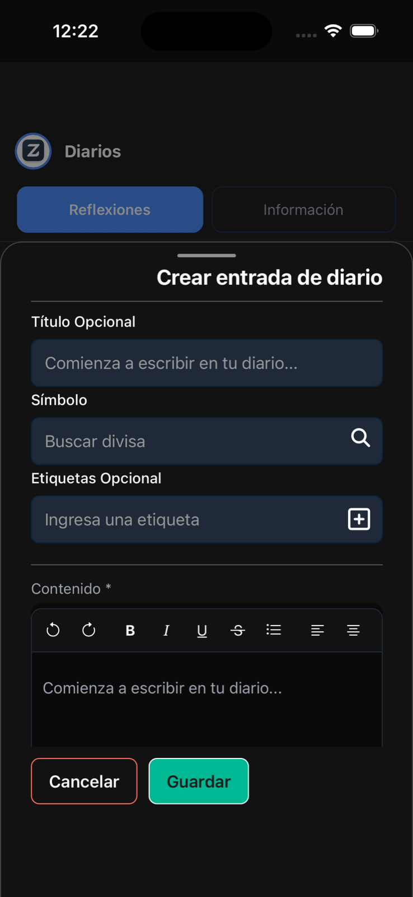
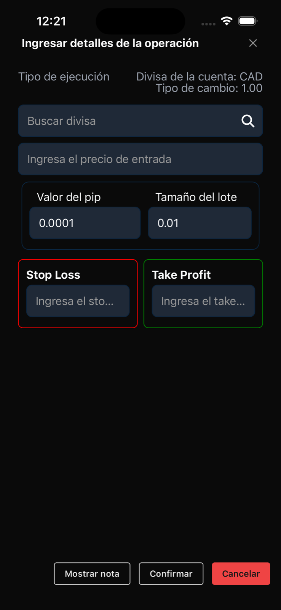
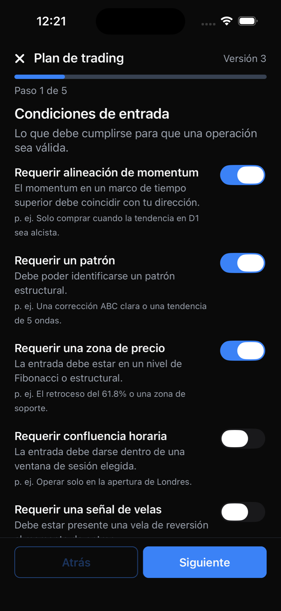
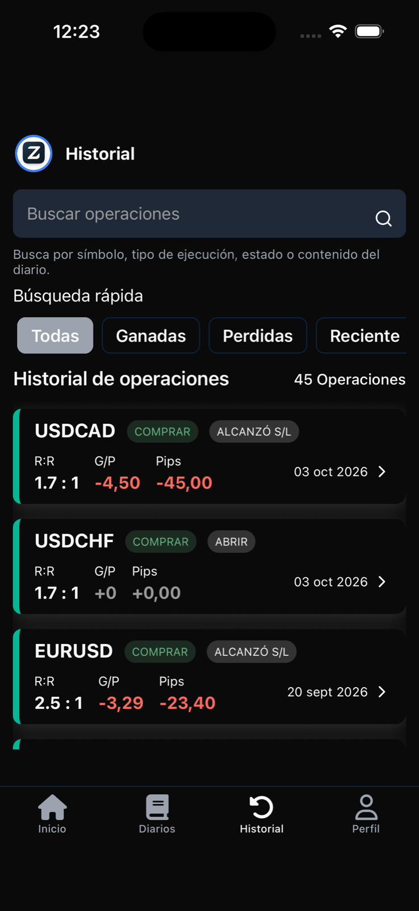
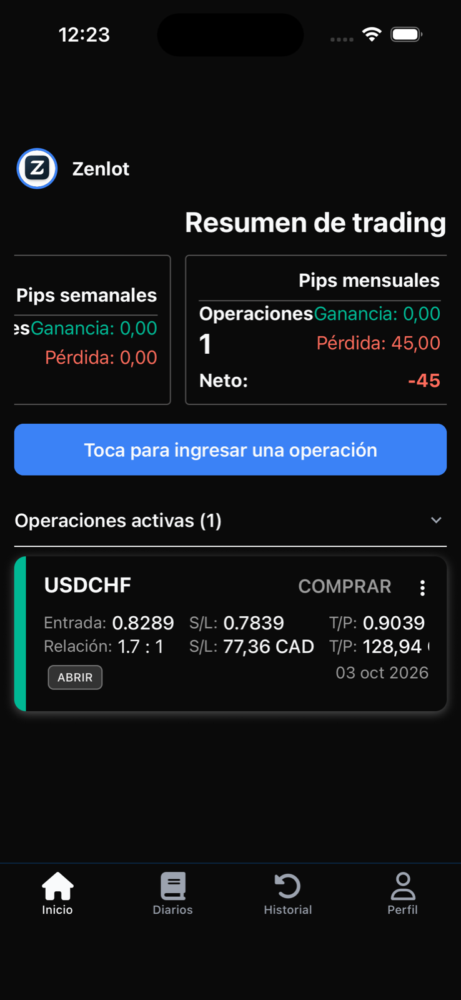
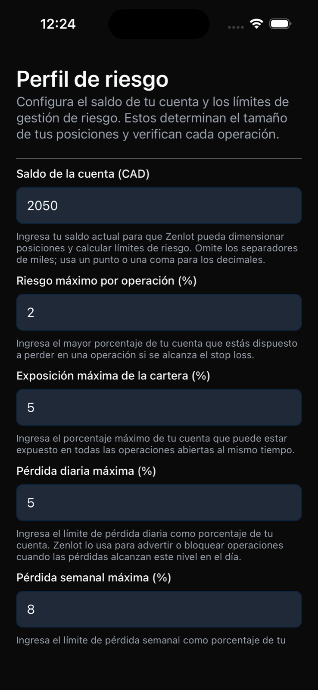
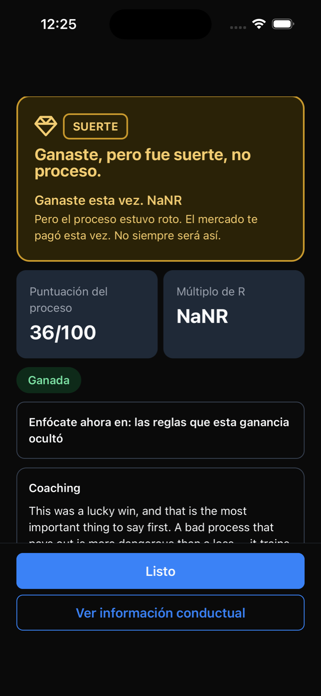
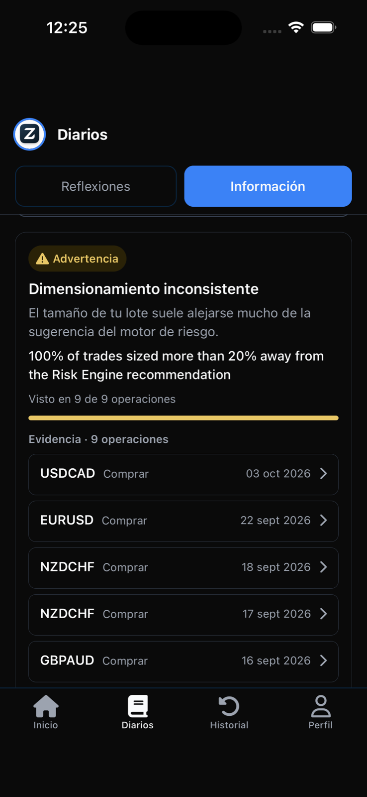

Construye disciplina.
Opera según tus reglas.
Reúne tus reglas de trading, los detalles de tus operaciones y tus reflexiones en un solo diario móvil. Zenlot te ayuda a crear una rutina de planificar, registrar y revisar tus operaciones.
Actualmente gratis en iOS y Android.
- Descarga gratuita
- No requiere conexión con un bróker
- English, Français & Español


Datos de ejemplo
Por qué Zenlot
Dale a tus reglas de trading un lugar en tu rutina.
Tener reglas es un paso. Volver a ellas es otro. Zenlot se creó para ayudar a los traders a mejorar su disciplina manteniendo a mano los detalles de las operaciones, los ajustes reutilizables y las reflexiones escritas.
- Define las reglas con las que quieres trabajar.
- Registra el razonamiento detrás de una operación.
- Dedica tiempo a revisar lo que pasó.
Creamos Zenlot para ayudar a los traders a construir disciplina y operar según sus reglas.
Una rutina que puedes repetir.
Cómo funciona
Define tus reglas. Registra tu operación. Revisa y reflexiona.
-
Paso 1Definir
Guarda ajustes de stop-loss y take-profit en pips que puedas reutilizar al registrar operaciones. Elige un perfil de riesgo — Prudente, Equilibrado o Dinámico — y, si quieres, crea un plan de trading.
- Reglas de trading
- Perfil de riesgo
- Plan de trading

Datos de ejemplo
-
Paso 2Registrar
Añade tu entrada, el tamaño del lote, el stop-loss y el take-profit. Zenlot sugiere niveles a partir de tus reglas y muestra orientación de posición y gobernanza antes de confirmar. Guarda el motivo de la operación junto a sus detalles.
- Registro de la operación
- Lista de verificación previa
- Nota del diario
Datos de ejemplo
-
Paso 3Revisar
Vuelve a tu historial y a tu diario. Apóyate en el análisis semanal y mensual, el veredicto de cada operación y la Información conductual para tu revisión.
- Historial
- Análisis semanal y mensual
- Veredicto de la operación
- Información conductual

Datos de ejemplo
Empieza con un registro claro. Construye un hábito al que puedas volver.
El ciclo es tu rutina, no una ejecución automática: Zenlot nunca envía órdenes por ti.
Una reflexión que podrías escribir
¿Cuál fue mi motivo para entrar?¿Seguí las reglas que pensaba aplicar?¿Qué debo recordar la próxima vez?
Contenido sugerido para el diario: escríbelo a tu manera.
En lenguaje sencillo
- Stop-lossEl precio en el que aceptas que la operación no funcionó y la cierras.
- Take-profitEl precio en el que tomas tu ganancia y cierras la operación.
- PipEl paso de precio estándar más pequeño de un par de divisas.
- Tamaño del loteCuánto estás operando. Zenlot puede recomendarte uno según tu perfil de riesgo.
Por qué vale la pena probar Zenlot
Un registro del que realmente puedes aprender.
Todas las funciones siguientes están en la versión actual del App Store y Google Play.
Reglas que puedes reutilizar.
Tus ajustes guardados de stop-loss y take-profit te sugieren niveles mientras introduces los detalles de una operación.
Un registro con contexto.
Conserva los números y el razonamiento. Las reflexiones escritas te dan más que revisar que un simple resultado.
Una rutina de revisión en el móvil.
Vuelve a tu historial, tu diario y el análisis semanal o mensual donde quiera que uses tu teléfono.
Barreras antes de confirmar.
Posición y gobernanza muestra el lote recomendado, la exposición del capital y la relación recompensa-riesgo frente a tu perfil de riesgo, y te avisa cuando una operación se sale de él.
Juzga el proceso, no solo el resultado.
Cada operación cerrada recibe un veredicto con su múltiplo R y notas de calidad de la configuración y apego al plan, para distinguir una ganancia afortunada de una pérdida disciplinada.
Patrones sobre los que puedes actuar.
Tras 10 operaciones evaluadas, la Información conductual señala hábitos recurrentes con las pruebas que los respaldan.
Pensado para traders de todos los niveles. Actualmente gratis.
También en la versión actual

Análisis semanal y mensual

Perfil de riesgo

Veredicto de la operación

Información conductual
Las pantallas muestran datos de ejemplo, no resultados reales de usuarios.
Para quién
Estés donde estés en el trading, un registro claro te ayuda a revisar.
Primero, el hábito.
Anota los detalles y tu razonamiento en cada operación. Con los términos en lenguaje sencillo de arriba tienes todo para empezar.
Mantén las reglas en la rutina.
Mantén tus reglas y tus reflexiones en cada registro, y deja que los veredictos muestren dónde se separan.
Ten el proceso a mano.
Conserva tu registro de trading y tu proceso de revisión en el teléfono, con historial, análisis e información conductual.
Zenlot apoya tu rutina. No sustituye la formación en trading ni tu propio criterio.
Descargar Zenlot
Empieza tu próxima revisión con un registro más claro.
Define tus reglas de trading, registra una operación y escribe por qué la tomaste. Date algo concreto a lo que volver.
Zenlot es actualmente gratis.
¿Para quién es Zenlot?
Para traders de todos los niveles que quieren construir disciplina mediante reglas, registro de operaciones y reflexión. La app se centra en el forex.
¿Qué puedo registrar?
Detalles de la operación como la entrada, el tamaño del lote, el stop-loss y el take-profit, junto con notas escritas. Las operaciones cerradas reciben un veredicto que puedes revisar más tarde.
¿Zenlot envía órdenes a mi bróker?
No. Zenlot registra y sigue tus operaciones; no envía órdenes a tu bróker. Una operación seguida puede cerrarse automáticamente en la app cuando se alcanza su stop-loss o take-profit: eso actualiza tu registro, no es una orden bursátil.
¿Zenlot es gratis?
Sí. Zenlot es actualmente gratis.
¿Dónde puedo descargarla?
Usa los botones de App Store o Google Play de esta página.
¿Qué idiomas admite?
Inglés, francés y español en toda la app, incluidos las fechas y el formato de los números, que siguen la configuración de tu dispositivo.
¿Cómo elimino mi cuenta y mis datos?
Sigue el proceso en nuestra página de eliminación de cuenta.
¿Zenlot es asesoramiento financiero?
No. Zenlot es una herramienta para aplicar reglas que defines tú mismo y registrar tus propias decisiones. No ofrece asesoramiento financiero, recomendaciones ni señales de trading. Operar conlleva riesgos, incluida la pérdida de tu capital.